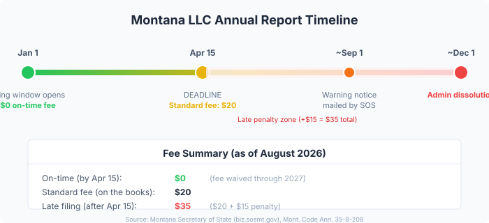

Montana LLC Annual Report: Fees, Deadline, and How to File in 2026
Montana LLC Annual Report: Fees, Deadline, and How to File in 2026
Last updated: 2026-08-23
Short answer: Montana LLC annual reports cost $20 (currently waived for on-time filings through 2027), due April 15 every year, filed online only at biz.sosmt.gov. If you have a Montana registered agent and your info hasn't changed, the filing takes about five minutes. If you are juggling compliance across multiple states or just want someone to handle it for you, Harbor Compliance offers managed annual report filing. If you are still setting up your LLC for the first time, doola bundles formation with ongoing compliance reminders so you never miss a deadline.
What is the Montana LLC annual report?
The annual report is a short confirmation filing, not a financial statement or tax return. Montana shows you what it has on file for your business (addresses, registered agent, management type, principals), and you verify or update it. The requirement comes from Mont. Code Ann. 35-8-208.
Most fields arrive pre-filled from the state's records. You log in, confirm or correct the details, sign electronically, and submit. Approval is instant.
When is the Montana LLC annual report due?
April 15 every year. The filing window opens January 1, giving you three and a half months. The deadline is fixed by statute and does not shift based on your formation anniversary.
First-year businesses: your first annual report is due between January 1 and April 15 of the calendar year after you formed. Form your LLC in 2026 and your first report window runs January 1 through April 15, 2027.
How much does it cost?
| Scenario | Fee | Notes |
|---|---|---|
| Filed by April 15 (on-time) | $0 | Fee waived by the Montana Secretary of State for filings submitted by April 15, 2024 through 2027 |
| Standard fee (on the books) | $20 | The statutory amount if the waiver expires |
| Late filing (after April 15) | $35 | $20 standard fee + $15 late penalty |
Sources: Montana SOS Business Filing Portal, SOS fee waiver announcement.
How do I file it online?
Montana has not accepted paper annual reports since 2017. The entire process runs through the state's Business Filing Portal:
- Go to biz.sosmt.gov and sign in with your ePass Montana account (create one free if needed).
- Search for your business by name or Folder ID number.
- Review the pre-filled report. Confirm or update your addresses, registered agent, management type, and principals. You can change your registered agent right inside the filing at no extra charge.
- Sign electronically, pay the applicable fee (if any), and submit. Approval is instant.

What happens if I miss the deadline?
Missing April 15 starts a one-way clock:
- April 16 onward: the $15 late penalty kicks in immediately. Total due: $35.
- ~September 1: about 140 days past due, the Secretary of State mails a warning of pending administrative dissolution.
- ~December 1: if the report still has not been filed, Montana administratively dissolves the LLC. A dissolved entity loses its good standing and the liability protection that comes with it.
You will not be able to open bank accounts, enter contracts, or defend against lawsuits as a dissolved entity until you reinstate.
Can I reinstate a dissolved Montana LLC?
Yes, within five years. Reinstatement means filing every delinquent annual report and paying the reinstatement and late fees, which typically run about $35 per missed year. After five years, the name may be released and reinstatement is no longer guaranteed.
The straightforward math: one missed report costs $35. Two years costs $70 plus reinstatement fees. File on time and it is free through 2027.
Should I outsource this?
The filing itself takes five minutes if your registered agent is current and your information has not changed. For a single Montana LLC with no multi-state obligations, doing it yourself is the right call.
Outsourcing makes sense when you:
- Run LLCs in multiple states and need someone tracking different deadlines.
- Have had compliance lapses before and want a safety net.
- Want a registered agent that also handles annual report filing as part of the service.
For managed compliance across states, Harbor Compliance offers tracked annual report filing and deadline management. If you are a first-time founder still choosing your formation service, doola handles formation and compliance tracking together, which means one fewer thing to remember. Northwest Registered Agent is another option with a strong reputation for privacy-focused registered agent service.
Service comparison
| Provider | Annual Report Filing | Registered Agent | Best for |
|---|---|---|---|
| Harbor Compliance | Managed filing, deadline tracking | Yes | Multi-state compliance, enterprises |
| doola | Included with formation + compliance plan | Yes | First-time founders, formation + compliance bundle |
| Northwest Registered Agent | Available as add-on | Yes | Privacy-focused, straightforward pricing |
Key dates and numbers at a glance
| Item | Detail |
|---|---|
| Filing window | January 1 through April 15 |
| On-time fee (2026) | $0 (waived through 2027) |
| Standard fee | $20 |
| Late fee | $35 ($20 + $15 penalty) |
| Filing method | Online only at biz.sosmt.gov |
| Statute | Mont. Code Ann. 35-8-208 |
| Warning notice | ~140 days past due (~September 1) |
| Administrative dissolution | ~8 months past due (~December 1) |
| Reinstatement window | 5 years from dissolution |
Recap checklist
- Log in at biz.sosmt.gov before April 15.
- Review pre-filled information (addresses, registered agent, management, principals).
- Update anything that has changed since last year.
- Sign and submit. Approval is instant.
- Save or screenshot the confirmation for your records.
- Set a calendar reminder for next year (January 1 through April 15).
FAQ
Do Montana LLCs really file annual reports?
Yes. Every Montana LLC and corporation must file an annual report with the Secretary of State to maintain good standing. This is not optional, even if your LLC had no activity during the year.
Is the annual report the same as a tax return?
No. The annual report is a state filing that confirms your business information. Your Montana state tax return (if applicable) is a separate filing with the Department of Revenue.
What if I just formed my Montana LLC this year?
Your first annual report is due between January 1 and April 15 of the year after formation. Form in 2026, file your first report in early 2027.
Can I file by mail or in person?
No. Montana has required online-only filing since 2017. There is no paper form to print or mail. Everything goes through biz.sosmt.gov.
What if my registered agent changed during the year?
You can update your registered agent directly inside the annual report filing at no additional charge. There is no separate form needed for agent changes.
How do I know if my LLC was dissolved?
Search your business at biz.sosmt.gov. If the status shows "Administratively Dissolved," you will need to reinstate by filing all delinquent reports and paying the associated fees.
Get our free LLC Formation Checklist
Step-by-step guide: state fees, timelines, EIN process, and the exact paperwork checklist. Used by 200+ founders.
Download Free Checklist